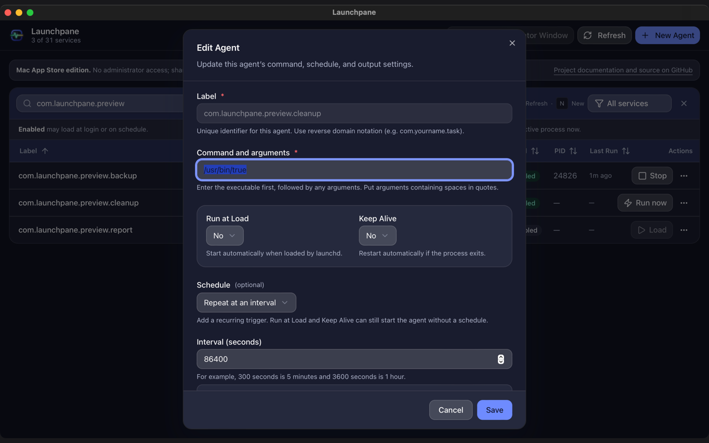
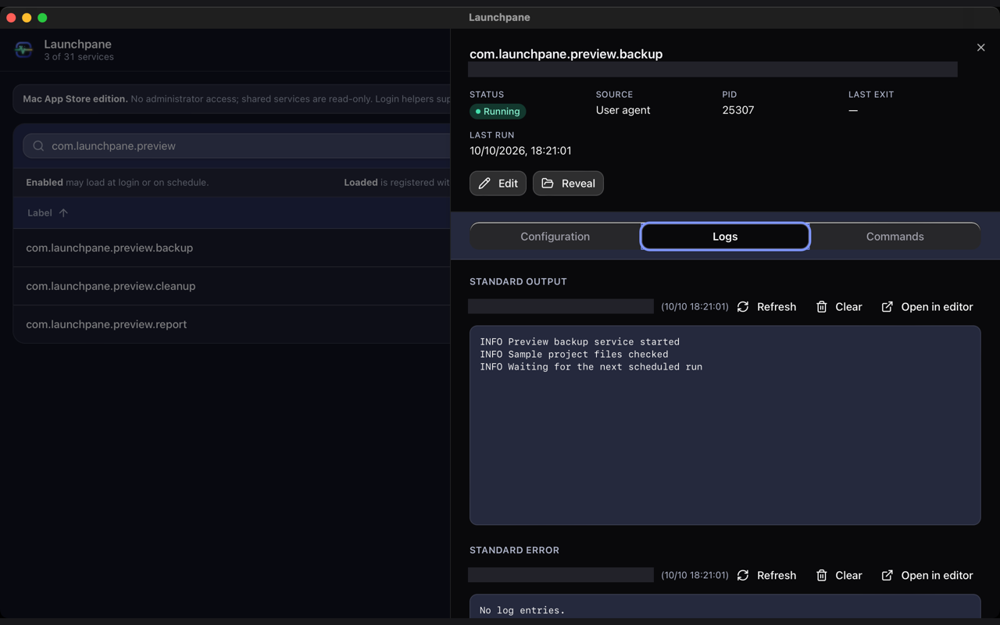

Know what
starts on
your Mac.
Launchpane brings launch agents, daemons, and app login items into one native workspace—so you can see their state, inspect what they do, and act with context.
Open source · Developer ID signed · Notarized by Apple

One view of the work happening behind the scenes.
macOS keeps background services in different places. Launchpane brings their labels, sources, and runtime state together so you can find the one you need.
- User agents
~/Library/LaunchAgents/- Shared launch agents
/Library/LaunchAgents/- System daemons
/Library/LaunchDaemons/- App login items
.app/Contents/Library/LoginItems/
See what each service is set up to do.
Open a service to inspect its command, arguments, schedule, environment, and working directory. Review parsed settings or the original plist when you need the full picture.
The details stay attached to the service you found—not scattered across files and terminal output.


Follow the evidence, not a guess.
Check runtime state, process ID, last exit code, and last run when available. Open the configured stdout and stderr logs alongside the service that produced them.
Understand what happened before deciding what to change.
Power with clear boundaries.
Different services have different owners. Launchpane keeps those limits visible instead of treating every file like yours to edit.
- Your agents
- Create, inspect, edit, and manage agents in your user account.
- Shared agents
- Manage supported lifecycle actions in your GUI session; shared plist files stay protected from editing and removal.
- System daemons
- Administrator controls are explicit. System-owned plist files remain protected.
- App login items
- Helpers have no standalone plist, so only supported actions are shown.
Bring your Mac’s background into focus.
Download a signed, Apple-notarized build for Apple Silicon, Intel, or both.
Install from the DMG using the normal macOS prompts. Read the installation notes. Screens shown are captures of the sandboxed App Store edition.